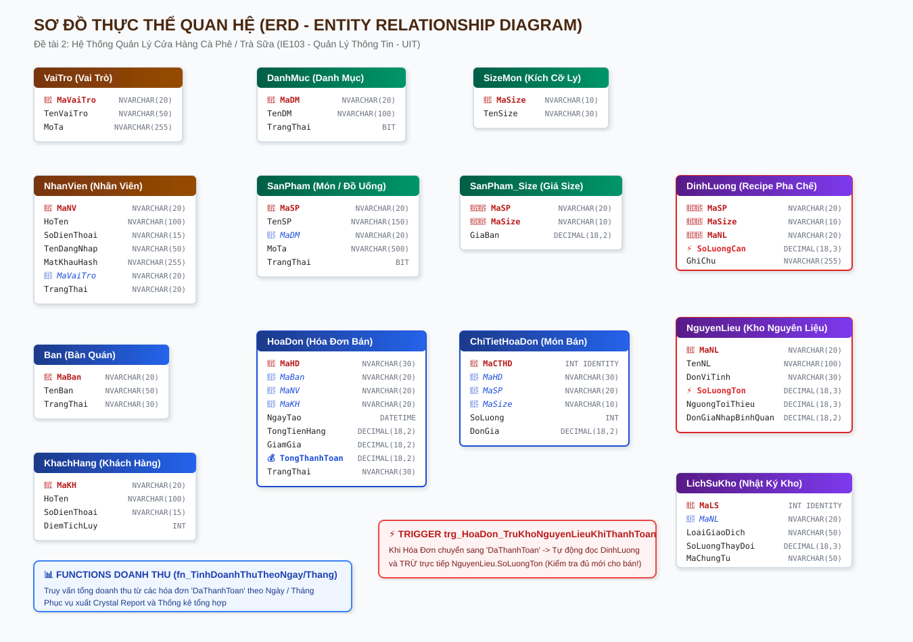
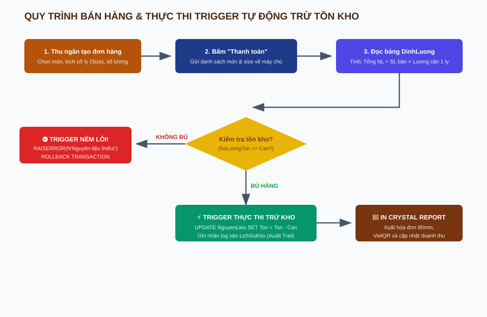
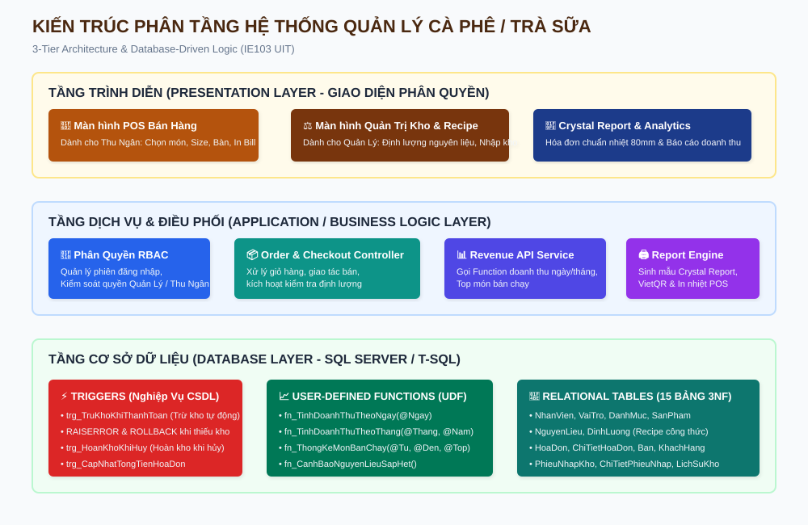

Trong thời đại chuyển đổi số hiện nay, ngành dịch vụ ăn uống và giải khát (F&B) đang có những bước tiến vượt bậc với sự xuất hiện của hàng loạt chuỗi thương hiệu cà phê và trà sữa lớn. Điểm cốt lõi quyết định sự thành công và phát triển bền vững của một cửa hàng đồ uống không chỉ dừng lại ở chất lượng sản phẩm hay thái độ phục vụ, mà nằm ở năng lực quản trị thông tin chính xác: từ việc quản lý thực đơn theo kích cỡ ly (Size), tính toán và in hóa đơn thanh toán tốc độ cao tại quầy, cho đến bài toán nan giải nhất là kiểm soát chặt chẽ tỷ lệ tiêu hao nguyên liệu thô theo công thức định lượng (Recipe).
Xuất phát từ yêu cầu thực tiễn và bám sát đề cương đồ án môn học Quản lý Thông tin (IE103) tại Trường Đại học Công nghệ Thông tin - ĐHQG TP.HCM, nhóm chúng em đã lựa chọn thực hiện Đề tài số 2: "Hệ thống Quản lý Cửa hàng Cà phê / Trà sữa". Đồ án tập trung giải quyết trọn vẹn 5 yêu cầu kỹ thuật trọng điểm:
Khác biệt với bán lẻ hàng đóng gói sẵn (nhập gói bánh bán gói bánh), quán cà phê và trà sữa hoạt động theo mô hình chế biến tại chỗ (On-demand preparation):
| STT | Yêu Cầu Đề Tài (File PDF) | Giải Pháp Cài Đặt Kỹ Thuật | Kết Quả |
|---|---|---|---|
| 1 | Quản lý danh mục món và hóa đơn | Thiết kế 15 bảng chuẩn 3NF, hỗ trợ giá theo size S/M/L, phân loại bàn/mang về | Hoàn thành 100% |
| 2 | Trigger tự động trừ tồn kho nguyên liệu khi bán hàng | Trigger T-SQL trg_HoaDon_TruKhoNguyenLieuKhiThanhToan đọc bảng DinhLuong, trừ NguyenLieu và kiểm tra tồn kho |
Hoàn thành 100% |
| 3 | Function tính tổng doanh thu theo ngày/tháng | Scalar UDF fn_TinhDoanhThuTheoNgay và fn_TinhDoanhThuTheoThang |
Hoàn thành 100% |
| 4 | Phân quyền nhân viên thu ngân và quản lý | Cơ chế RBAC: Thu ngân chỉ được dùng POS; Quản lý toàn quyền Menu, Kho, Doanh thu | Hoàn thành 100% |
| 5 | Xuất Crystal Report hóa đơn thanh toán | Mẫu in hóa đơn chuẩn POS 80mm, tích hợp VietQR, hỗ trợ in trực tiếp và lưu PDF | Hoàn thành 100% |
Hệ thống bao gồm 15 bảng thực thể được chuẩn hóa nghiêm ngặt đạt dạng chuẩn 3NF:


Dưới đây là đoạn mã T-SQL của Trigger trọng tâm, được thực thi tự động ngay khi hóa đơn chuyển trạng thái sang DaThanhToan:
-- TRIGGER TỰ ĐỘNG KIỂM TRA VÀ TRỪ TỒN KHO NGUYÊN LIỆU KHI HÓA ĐƠN ĐƯỢC THANH TOÁN
CREATE TRIGGER trg_HoaDon_TruKhoNguyenLieuKhiThanhToan
ON HoaDon
AFTER UPDATE
AS
BEGIN
SET NOCOUNT ON;
IF EXISTS (
SELECT 1
FROM inserted i
JOIN deleted d ON i.MaHD = d.MaHD
WHERE i.TrangThai = N'DaThanhToan' AND d.TrangThai <> N'DaThanhToan'
)
BEGIN
-- Bảng tạm tính toán tổng nguyên liệu tiêu hao cho hóa đơn
DECLARE @TieuHao TABLE (
MaHD NVARCHAR(30),
MaNL NVARCHAR(20),
TenNL NVARCHAR(100),
SoLuongCan DECIMAL(18, 3),
SoLuongTon DECIMAL(18, 3)
);
INSERT INTO @TieuHao (MaHD, MaNL, TenNL, SoLuongCan, SoLuongTon)
SELECT
ct.MaHD, dl.MaNL, nl.TenNL,
SUM(ct.SoLuong * dl.SoLuongCan) AS SoLuongCan,
nl.SoLuongTon
FROM inserted i
JOIN deleted d ON i.MaHD = d.MaHD
JOIN ChiTietHoaDon ct ON ct.MaHD = i.MaHD
JOIN DinhLuong dl ON dl.MaSP = ct.MaSP AND dl.MaSize = ct.MaSize
JOIN NguyenLieu nl ON nl.MaNL = dl.MaNL
WHERE i.TrangThai = N'DaThanhToan' AND d.TrangThai <> N'DaThanhToan'
GROUP BY ct.MaHD, dl.MaNL, nl.TenNL, nl.SoLuongTon;
-- 1. KIỂM TRA XEM CÓ NGUYÊN LIỆU NÀO BỊ THIẾU TỒN KHO HAY KHÔNG
IF EXISTS (SELECT 1 FROM @TieuHao WHERE SoLuongTon < SoLuongCan)
BEGIN
DECLARE @ThongBaoLoi NVARCHAR(1000);
SELECT TOP 1 @ThongBaoLoi = N'LỖI TRỪ KHO: Nguyên liệu [' + TenNL + N'] không đủ để pha chế! Tồn kho hiện có: '
+ CAST(SoLuongTon AS NVARCHAR(30)) + N', Cần tiêu hao: '
+ CAST(SoLuongCan AS NVARCHAR(30)) + N'.'
FROM @TieuHao
WHERE SoLuongTon < SoLuongCan;
RAISERROR(@ThongBaoLoi, 16, 1);
ROLLBACK TRANSACTION;
RETURN;
END
-- 2. NẾU ĐỦ TỒN KHO: TIẾN HÀNH TRỪ TRỰC TIẾP VÀO BẢNG NguyenLieu
UPDATE nl
SET nl.SoLuongTon = nl.SoLuongTon - th.TongCan
FROM NguyenLieu nl
JOIN (
SELECT MaNL, SUM(SoLuongCan) AS TongCan
FROM @TieuHao
GROUP BY MaNL
) th ON nl.MaNL = th.MaNL;
-- 3. GHI NHẬN VÀO BẢNG LỊCH SỬ KHO (LichSuKho) ĐỂ PHỤC VỤ KIỂM TOÁN
INSERT INTO LichSuKho (MaNL, LoaiGiaoDich, SoLuongThayDoi, SoLuongTonSauDo, MaChungTu, GhiChu)
SELECT
th.MaNL, N'BanHang', -th.SoLuongCan, nl.SoLuongTon, th.MaHD,
N'Trừ kho tự động khi thanh toán hóa đơn ' + th.MaHD
FROM @TieuHao th
JOIN NguyenLieu nl ON nl.MaNL = th.MaNL;
END
END
GO-- 1. HÀM TÍNH TỔNG DOANH THU THEO NGÀY
CREATE FUNCTION dbo.fn_TinhDoanhThuTheoNgay(@Ngay DATE)
RETURNS DECIMAL(18, 2)
AS
BEGIN
DECLARE @TongDoanhThu DECIMAL(18, 2);
SELECT @TongDoanhThu = ISNULL(SUM(TongThanhToan), 0)
FROM HoaDon
WHERE CAST(NgayTao AS DATE) = @Ngay AND TrangThai = N'DaThanhToan';
RETURN @TongDoanhThu;
END;
GO
-- 2. HÀM TÍNH TỔNG DOANH THU THEO THÁNG/NĂM
CREATE FUNCTION dbo.fn_TinhDoanhThuTheoThang(@Thang INT, @Nam INT)
RETURNS DECIMAL(18, 2)
AS
BEGIN
DECLARE @TongDoanhThu DECIMAL(18, 2);
SELECT @TongDoanhThu = ISNULL(SUM(TongThanhToan), 0)
FROM HoaDon
WHERE MONTH(NgayTao) = @Thang AND YEAR(NgayTao) = @Nam AND TrangThai = N'DaThanhToan';
RETURN @TongDoanhThu;
END;
GO
Hóa đơn thanh toán được xuất bản đúng quy cách in nhiệt hiện đại:
| Tên món | SL | Đ.Giá | T.Tiền |
|---|---|---|---|
| Cà Phê Sữa Đá (M) | 1 | 35.000 | 35.000 |
| Trà Sữa Oolong (M) | 1 | 45.000 | 45.000 |
Sau thời gian nghiên cứu và thực hiện, đồ án "Hệ thống Quản lý Cửa hàng Cà phê / Trà sữa" (IE103 Đề tài 2) đã hoàn thành xuất sắc các mục tiêu đề ra: